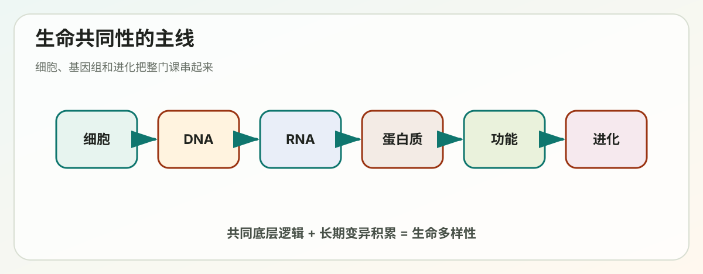

Lecture 01
第1讲学习讲义：Cells and Genomes

对应课件：1_Cells_and_Genomes.pdf
这份讲义是给零基础同学用的。你不需要一开始就记住所有名词，先抓住一条主线：所有生命虽然长得很不一样，但底层运行逻辑高度统一；这种统一性来自细胞、基因组和进化。
这讲到底在讲什么
第1讲不是在堆知识点，而是在建立整门课的世界观。
你需要先接受三个核心判断：
- 所有生物都由细胞构成，细胞是生命活动的基本单位。
- 所有细胞都要保存、复制、读取遗传信息。
- 所有生命的差异，本质上都和基因组的变化、表达方式的差异以及长期进化有关。
如果你把这三句话真正理解了，后面关于 DNA、RNA、蛋白质、复制、转录、翻译和调控的方法学内容就会非常顺。
一、为什么这门课从“细胞与基因组”开始
分子细胞生物学研究的是：生命系统如何在分子层面被构建、维持、复制和调控。
这门课后面会反复讨论三类分子：
- DNA：长期保存遗传信息。
- RNA：中间传递、加工和调控信息。
- 蛋白质：执行大多数结构、催化和调控功能。
而这三类分子都必须放在“细胞”里理解，因为细胞提供：
- 边界。
- 能量。
- 反应环境。
- 空间分区。
- 调控网络。
所以这讲其实是在回答：生命系统最小的功能单位是什么，它为什么能稳定运转，又为什么会演化出巨大的多样性。
二、细胞的共同性：为什么说“所有细胞都惊人地相似”
课件里有一句很重要的话：the astonishing constancy of all cells。意思是，虽然细菌、植物、动物差异很大，但细胞层面的基本规则非常一致。
1. 所有细胞都用 DNA 保存遗传信息
DNA 之所以适合作为遗传物质，是因为它同时满足两件事：
- 信息可以稳定保存。
- 信息可以通过模板复制。
这里的“模板复制”是分子生物学最核心的思想之一。意思是：
- 一条已有的核酸链决定新链如何合成。
- 配对规则提供复制准确性。
你可以把它理解成旧链像模具，新链不是“凭空想出来”的，而是“照着配对规则长出来”的。
2. 所有细胞都把 DNA 信息转录成 RNA
不是所有 DNA 都会被一直使用。细胞会先把需要的一部分 DNA 信息转成 RNA，这一步叫转录。
这里你先记住：
- DNA 更像总档案。
- RNA 更像被调出来执行任务的副本。
RNA 不是单一类型。后面你会学到：
- mRNA：携带编码蛋白的信息。
- rRNA：构成核糖体的重要组成部分。
- tRNA：在翻译时搬运氨基酸。
- 还有很多调控 RNA。
3. 所有细胞都把 RNA 信息翻译成蛋白质
蛋白质是细胞真正的大规模执行层。
蛋白质可以：
- 作为酶催化反应。
- 作为结构元件支撑细胞。
- 作为受体感知信号。
- 作为转运蛋白搬运物质。
- 作为调控因子控制其他分子。
因此，DNA 不是直接“干活”的，真正大量执行功能的是蛋白质。
4. 所有细胞都需要能量
生命不是静止系统，而是持续消耗能量维持有序状态的开放系统。
细胞要不断：
- 合成分子。
- 修复损伤。
- 运输物质。
- 建立离子梯度。
- 分裂增殖。
这些都需要自由能输入。后面第2讲会专门讲 ATP 和代谢能量学。
5. 所有细胞都有膜
细胞膜的意义非常基础：
- 把“自己”和“外界”分开。
- 允许选择性通透。
- 维持内部化学环境。
- 使能量转换成为可能。
如果没有膜，细胞就无法维持稳定的内环境，也谈不上真正的生命活动。
三、细胞理论：现代生物学的基础框架
细胞理论的核心思想通常概括为：
- 所有生物由一个或多个细胞组成。
- 细胞是生命活动的基本单位。
- 新细胞来自已有细胞。
它意味着：
- 生命活动可以落实到细胞层面解释。
- 遗传、发育、疾病都可以在细胞尺度被研究。
四、原核细胞和真核细胞：最重要的入门对比
1. 原核细胞
典型代表是细菌和古菌。
主要特点：
- 没有真正的细胞核。
- DNA 通常位于拟核区。
- 一般体积较小。
- 细胞内部膜性区室较少。
- 基因组通常较小、较紧凑。
2. 真核细胞
典型代表是动物、植物、真菌和原生生物。
主要特点：
- 有被核膜包裹的细胞核。
- 有复杂细胞器，如线粒体、内质网、高尔基体。
- 染色体为线性。
- 基因组通常更大，非编码区域更多。
- 调控层级更复杂。
3. 初学者最容易混淆的点
- “原核”不等于“低等”。
- 真核更复杂，不代表一定“更高级”。
- 原核和真核的许多核心机制仍然共享，比如遗传密码基本通用。
五、最小细胞与“生命需要多少基因”
课件提到：一个活细胞可能少于 500 个基因就能存在。
这个结论的意义很大：
- 生命并不要求无限复杂。
- 只要关键功能模块齐全，系统就能运行。
这些核心模块通常包括：
- DNA 复制与修复。
- RNA 转录与加工的基础机制。
- 蛋白质翻译。
- 膜的建立与维持。
- 能量获取与代谢。
- 物质运输。
这也启发我们理解“生命的最小集合”：不是所有功能都必须有，而是核心信息流和基本代谢必须闭环。
六、生命多样性：差异从哪里来
多样性的来源主要包括：
- 基因突变。
- 基因复制。
- 基因丢失。
- 基因重排。
- 水平基因转移。
- 自然选择和环境筛选。
所以，生物学里的“不同”并不是凭空出现，而是建立在“共同底盘 + 长期变化”之上。
七、系统发育树与三域：细菌、古菌、真核生物
课件提到基于 rRNA 序列建立生命树，这是现代生物学特别关键的进步。
rRNA 常用来做系统发育分析，因为：
- 所有生物都有核糖体。
- rRNA 功能重要，变化速度适中。
- 既有保守区，也有可变区。
由此建立的“三域”体系包括：
- Bacteria 细菌域。
- Archaea 古菌域。
- Eukaryota 真核域。
这告诉我们：
- 真核生物不是简单从普通细菌线性变出来的。
- 古菌和真核在很多信息处理机制上更接近。
八、基因如何演化：复制、分化、形成基因家族
1. 同源基因 homologous genes
只要两个基因来自共同祖先，就叫同源。
同源不代表功能完全一样，只表示“祖上有关系”。
2. 基因复制 gene duplication
一个基因复制后，生物就多出一份“备份”。
接下来会发生几种可能：
- 一份维持原功能。
- 一份逐渐积累变化，获得新功能。
- 两份分工，各保留部分原功能。
- 其中一份失活，变成伪基因。
3. 基因家族 gene family
由同一个祖先基因不断复制和分化形成的一组相关基因，叫基因家族。
它能解释为什么生物体内会有“相似但不完全一样”的蛋白，以及复杂性如何逐步增加。
九、水平基因转移：基因不一定只“父传子”
在微生物世界里，经常发生水平基因转移：
- 一个生物把基因直接转给另一个生物。
- 不一定是亲子关系。
这会带来很强的进化后果，例如：
- 抗生素抗性快速传播。
- 新代谢能力迅速扩散。
因此，生命进化并不总是像一棵规则分叉树，有时更像“树上连着网”。
十、真核细胞起源：为什么它是生物演化史上的大事件
课件中提到“内共生”证据。你需要掌握的主线是：
- 真核细胞的出现不是简单体积变大。
- 它意味着细胞内部出现了高度分工。
1. 内共生理论 endosymbiosis
核心说法：
- 某个祖先细胞吞噬了另一个细菌。
- 被吞噬者没有被消化，反而长期共生。
- 最终演化成线粒体，植物中还进一步出现叶绿体。
2. 支持证据
常见证据包括：
- 线粒体和叶绿体有自己的 DNA。
- 它们有双层膜。
- 它们的某些特征更像细菌。
- 它们以类似二分裂的方式增殖。
十一、基因组大小与“非编码 DNA 不等于没用”
真核基因组很大，而且非蛋白编码 DNA 很多。
初学者常见误区是：
- 以为 DNA 上只有编码蛋白的部分才重要。
这是错误的。非编码区域可能承担很多关键任务：
- 调控基因表达。
- 参与染色质结构组织。
- 影响复制、重组和染色体稳定性。
- 产生非编码 RNA。
更准确的说法是：
- 非编码 DNA 不能简单等同于“垃圾”。
- 但不同片段的功能重要性并不一样。
十二、多细胞生物为什么能由一个受精卵长成复杂个体
课件有一句很关键：The genome defines the program of multicellular development。
意思是：
- 多细胞发育不是临时拼出来的。
- 而是由基因组里编码和调控的信息程序逐步展开。
几乎所有体细胞都携带相同基因组，但不同细胞之所以变成神经元、肌肉细胞、肝细胞，不是因为 DNA 内容完全不同，而是因为不同基因在不同时间、不同位置被打开或关闭。
十三、模式生物：为什么研究酵母、果蝇、线虫、小鼠，也能帮助理解人类
常见模式生物包括：
- 酵母 yeast。
- 拟南芥 Arabidopsis。
- 线虫 worm。
- 果蝇 fly。
- 斑马鱼 zebrafish。
- 小鼠 mouse。
为什么不用所有实验都直接研究人：
- 人体实验有伦理限制。
- 生命周期长。
- 遗传操作难。
- 成本高。
为什么模式生物有用：
- 许多核心基因和通路高度保守。
- 易于培养和繁殖。
- 易于做遗传操作。
- 可以快速观察表型。
十四、这一讲的总主线
所有生命都建立在细胞这个基本单位上；所有细胞都依靠 DNA、RNA、蛋白质和能量系统运行；生命的巨大差异来自基因组变化、表达调控和长期进化；模式生物之所以有价值，是因为生命底层机制在进化中被广泛保留下来。
十五、你现在必须会的关键词
- Cell theory：细胞理论。
- Genome：基因组。
- Chromosome：染色体。
- Gene：基因。
- Homolog：同源。
- Gene family：基因家族。
- Horizontal gene transfer：水平基因转移。
- Endosymbiosis：内共生。
- Model organism：模式生物。
十六、常见误区
- “所有细胞都一样”是错的。正确说法是所有细胞共享底层规则，但在结构和功能上高度多样。
- “真核比原核高级”不严谨。
- “非编码 DNA 都没用”是错的。
- “不同组织细胞的 DNA 完全不同”通常也是错的。
十七、自测题
1. 为什么说 DNA 适合作为遗传信息载体？
答题关键：
- 稳定。
- 可模板复制。
- 信息编码容量高。
2. 原核细胞和真核细胞最核心的结构差异是什么？
答题关键：
- 是否有真正细胞核和复杂膜性区室。
3. 为什么研究酵母和果蝇能够帮助理解人类？
答题关键：
- 基本机制保守。
- 遗传操作方便。
4. 水平基因转移为什么重要？
答题关键：
- 基因可在非亲子关系生物间传播。
- 会加速适应和进化。
十八、考前速记版
- 细胞是生命的基本单位。
- 所有细胞共享 DNA 复制、RNA 转录、蛋白质翻译这条底层信息流。
- 原核和真核差异大，但核心分子逻辑保守。
- 基因组会通过复制、突变、重排和转移演化。
- 真核细胞复杂化与内共生等事件有关。
- 多细胞发育依赖同一基因组的差异表达。
- 模式生物是理解普遍生物学规律的工具。
十九、深入扩展：原核和真核到底差在哪些层级
很多零基础同学只会说“一个有细胞核，一个没有”，这当然没错，但太浅了。更好的记法是按层级比较。
1. 信息存放方式
- 原核：DNA 常集中在拟核区，通常较少被复杂膜结构隔开。
- 真核：DNA 主要位于细胞核中，并被染色质高度包装。
2. 基因组组织方式
- 原核：基因组通常较小、更紧凑，编码区密度较高。
- 真核：基因组通常更大，非编码区和调控区更丰富。
3. 细胞内部空间分区
- 原核：空间分区相对少，但并不等于完全无组织。
- 真核：有线粒体、内质网、高尔基体、溶酶体等复杂细胞器。
4. 基因表达流程
- 原核：转录和翻译可在时间和空间上更紧密耦联。
- 真核：转录在核内，翻译在胞质，中间有 RNA 加工和输出。
5. 调控复杂度
- 原核：更强调快速应对环境变化。
- 真核：更强调发育、细胞类型差异和长期稳定表达程序。
二十、为什么说“生命共同性”比“生命差异性”更值得先学
因为差异是建立在共同底盘上的。
比如：
- 不同生物都用核酸存储信息。
- 都用核糖体翻译蛋白。
- 都需要膜和能量代谢。
这意味着当你研究一个模式生物时，往往不是在学“一个离人类很远的奇怪东西”，而是在学生命系统的通用规则。
二十一、内共生理论为什么能解释真核复杂化
真核细胞之所以能维持更大体积、更复杂结构和更精细调控，一个重要前提是更强的能量供应。
内共生理论之所以强，不只是因为“线粒体像细菌”，而是因为它解释了：
- 为什么真核细胞里会有半自主细胞器。
- 为什么这些细胞器能大幅提升代谢能力。
- 为什么真核演化会突然出现内部功能分工的跃迁。
二十二、模式生物不是“替代品”，而是“放大镜”
每种模式生物都有自己特别擅长回答的问题：
- 酵母：细胞周期、基础遗传学、真核单细胞机制。
- 线虫：发育谱系清晰，细胞命运研究强。
- 果蝇：发育模式、遗传筛选强。
- 斑马鱼：脊椎动物发育可视化好。
- 小鼠：最接近哺乳动物生理和疾病模型。
所以模式生物不是因为“研究不起人类”才用，而是因为它们在不同问题上更高效、更清晰。
二十三、如果你要真正学懂第 1 讲，最该建立的思维习惯
每看到一个生命现象，都先问三件事：
- 它发生在什么细胞里。
- 它依赖哪些分子信息流。
- 它是在进化上保守的，还是某类生物特有的。
只要这三个问题开始变成你的本能，第 1 讲就不再只是导论，而是整门课的坐标系。